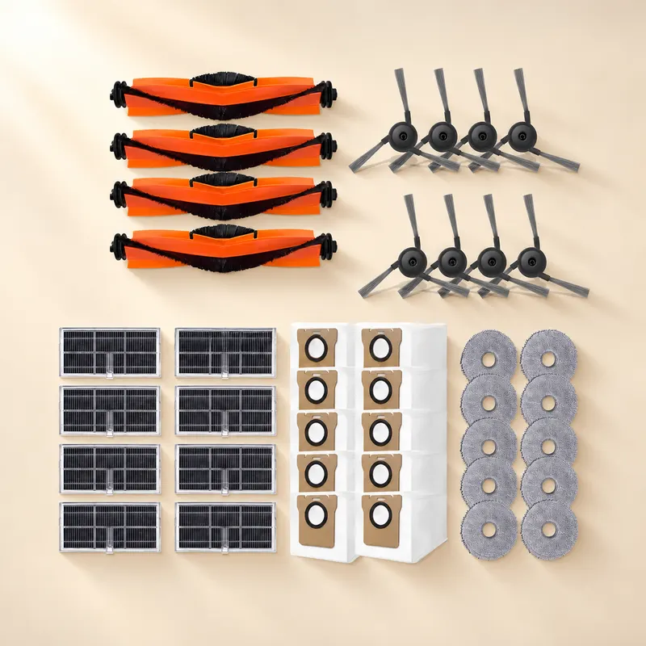

샤오미 (Xiaomi)
복도 콘솔장 수납으로 깔끔한 샤오미 로봇청소기 M40 브러시·걸레 1년 세트
글·구성: 제이상점 · 기종별 소모품 규격·호환·유지비 요약본 (실물 구성 예시 사진과 상세 후기는 아래 네이버 블로그 모바일 원문에서 보실 수 있습니다.)

핵심 관리 · 선택 체크포인트
- 거실이나 복도에 스테이션을 두고 쓰는 샤오미 로봇청소기 M40은 자주 교체하는 오렌지 V자 브러시와 원형 걸레 패드, 화이트 프레임 필터, 크라프트 칼라 더스트백을 복도 콘솔장 바구니 한곳에 모아 두면 관리 동선이 놀라울 만큼 간편해집니다.
- 오렌지 V자 메인브러시와 화이트 프레임 격자 필터 점검: 샤오미 M40은 시인성이 좋은 오렌지색 메인브러시와 3암 블랙 사이드브러시, 깔끔한 화이트 프레임 직사각 헤파필터를 사용합니다.
- 샤오미 로봇청소기 M40 1년 세트 구성품 및 수납·점검 포인트: 품목별 교체 주기가 다른 소모품 5종을 한 바구니에 정리해 관리하는 기준표입니다.
- 샤오미 M40·M30S·M30 Pro·X20 시리즈 중 보유 기종이 M40인지 확인한 뒤 상세페이지에서 선택해 주세요.
- 복도 콘솔장 패브릭·원목 바구니 수납과 베란다 와이어 랙 건조: 복도 콘솔 선반의 패브릭·원목 바구니에 새 더스트백 3매와 화이트 프레임 필터 3개, 오렌지 브러시, 원형 걸레를 정돈해 두고, 씻은 부품은 베란다
부품 규격 · 점검 기준표
| 구성 품목 | 샤오미 M40 전용 규격 | 점검 및 교체 포인트 |
|---|---|---|
| 오렌지 V자 메인·3암 브러시 | 오렌지·블랙 브러시 롤러 + 3갈래 사이드브러시 | 솔 벌어짐 및 양끝 베어링 캡 이물질 주기적 제거 |
| 원형 회전 물걸레 패드 | 그레이 극세사 원형 패드 쌍 | 세척 후 통풍 건조 및 마른 예비 패드와 2매 동시 교체 |
| 화이트 프레임 필터·더스트백 | 직사각 헤파필터 + 브라운 크라프트 칼라 더스트백 | 필터 24시간 그늘 건조 및 더스트백 슬롯 밀착 체결 |
자주 묻는 질문 (FAQ)
Q. 샤오미M40의 오렌지 V자 메인·3암 브러시 규격과 관리 기준은 무엇인가요?
A. 오렌지·블랙 브러시 롤러 + 3갈래 사이드브러시 규격을 사용하며, 솔 벌어짐 및 양끝 베어링 캡 이물질 주기적 제거 기준으로 점검·교체하면 청소 효율을 안정적으로 유지할 수 있습니다.
Q. 샤오미M40의 원형 회전 물걸레 패드 규격과 관리 기준은 무엇인가요?
A. 그레이 극세사 원형 패드 쌍 규격을 사용하며, 세척 후 통풍 건조 및 마른 예비 패드와 2매 동시 교체 기준으로 점검·교체하면 청소 효율을 안정적으로 유지할 수 있습니다.
Q. 샤오미M40의 화이트 프레임 필터·더스트백 규격과 관리 기준은 무엇인가요?
A. 직사각 헤파필터 + 브라운 크라프트 칼라 더스트백 규격을 사용하며, 필터 24시간 그늘 건조 및 더스트백 슬롯 밀착 체결 기준으로 점검·교체하면 청소 효율을 안정적으로 유지할 수 있습니다.
💡 제이상점 1:1 전용 규격 검수 & 실속 구매 포인트
검수 상품: [호환] 샤오미 M40 소모품 물걸레 더스트백 브러쉬 필터 제이상점 1년 패키지 · 대표 구성 참고가 59,900원대(옵션·할인별 결제 화면 기준)
선택 가능 옵션: 1년 세트 (세제 미포함) · 6개월 세트 (세제 미포함) · 3개월 세트 (세제 미포함)
☑️ 단품 반복 배송비 대신 기간별 패키지로 1년 유지비 절감 · 물세척 부품 24시간 교대 건조 여분 확보 · 중국 구매대행·해외직배송(개인통관고유부호 확인)